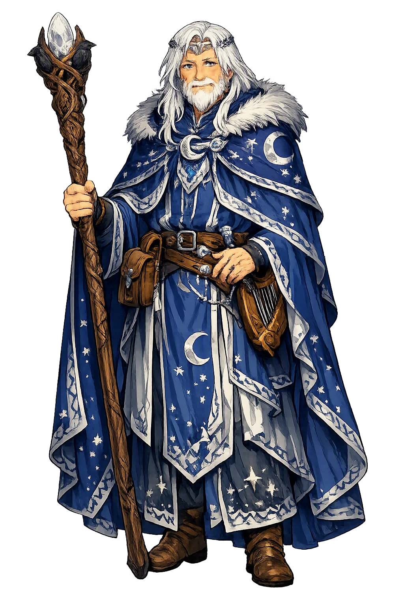
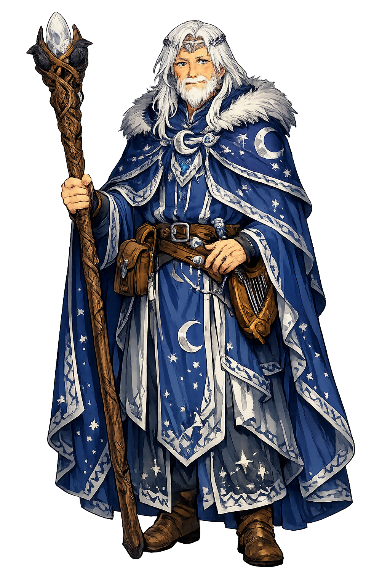

Unicode restoration and ASCII comparison
Taliesin
The name survives in scholarly transliteration. Taliesin is the standard Celtic romanisation, documented in academic sources — “Welsh bard”. Because the spelling uses only Latin letters, the form is the same in both ASCII and Unicode.
No indigenous writing system is securely attested for individual celtic names. The form shown is a modern scholarly transliteration.
taliesin
The plain taliesin form is identical to the Unicode restoration. Because this name is already written in Latin letters, no diacritics, stress, or script information were lost — only capitalization differs.
Taliesin
The Unicode restoration does not need to recover lost marks for Taliesin. Its value is canonical spelling and consistent cataloguing, not the reconstruction of erased orthography. The domain is readable as-is to both DNS and humanity.
Taliesin.com → taliesin.com
The non-ASCII characters in Taliesin are encoded while the ASCII remains visible. To the DNS, it is Punycode. To humanity, it is Taliesin.
How Taliesin is preserved in writing
No indigenous writing system is securely attested for individual celtic names. The form shown is a modern scholarly transliteration.
Contribute scholarly provenance →Owned, ideal, and ASCII forms of Taliesin
Taliesin
The full Unicode restoration. taliesin.com is not in the PuniCodex collection — it is watched for release; if it drops, this temple upgrades to an owned flagship.
How Taliesin was spoken
The Radiant Brow, Chief of Bards
Taliesin is the supreme bard of Welsh tradition — twice-born master of the awen, the flowing spirit of poetic inspiration. As Gwion Bach he stirred Ceridwen's cauldron and caught the three drops meant for her son; as the grain the black hen swallowed he was reborn from the water with a brow so radiant that Elffin ap Gwyddno named him for it. Before Maelgwn Gwynedd's court he silenced the assembled bards with a puff of breath and freed his foster-father from thirteen locks; and behind the legend stands a historical poet of sixth-century Rheged, whose praise-songs to Urien the Historia Brittonum already knew. Poet and shapeshifter, child of the cauldron and voice of all he has ever been, Taliesin is the Welsh tradition's own answer to what a name is: a brow made radiant by what has passed through it.
Ceridwen's cauldron, boiled a year and a day for her son Afagddu, from which the whole science of poetry was to distill — the vessel of inspiration at the root of the legend.
The three drops of the cauldron's liquor that flew onto Gwion Bach's thumb as he stirred: all the awen there was, spent at once, and the reason everything after belongs to him.
The last shape of the pursuit: Gwion as a single grain on the winnowing floor, Ceridwen as a black hen who swallowed him — the meal that became a womb.
Elffin's salmon weir where the coracle came to rest: the luckless boy lifting from the water a child with a radiant brow, and giving Welsh poetry its name.
Stories of Taliesin
Taliesin's dossier divides into two figures the Welsh tradition never quite separated: the historical poet of sixth-century Rheged, and the wonder-child of the cauldron whose story is medieval but survives whole only in sixteenth-century manuscripts. The first is attested within three centuries of his life; the second is the fullest legendary biography any Celtic poet ever received. Between them the name becomes a theory of poetry itself.
The Historia Brittonum (c. 829) names five poets famed in the days of Ida of Bernicia, in the mid-sixth century: Talhaearn Tad Awen, Aneirin, Cian, Blwchfardd — 'and Taliesin, who is renowned in British poetry'. The Book of Taliesin preserves the substance behind the notice: a core of praise-poems to Urien of Rheged and his son Owain, court verse of the Old North, singing the wars of Rheged against the Bernician Angles. Ifor Williams's scholarship established the canon: a dozen poems of the Book stand as plausibly the work of a real Taliesin, court bard of Urien in the generation before Rheged fell.
This is the oldest Taliesin the record offers — not a wonder-child but a professional of the northern courts, remembered three centuries later as the very type of the famed poet. The legend did not invent him; it annexed him, and gave the court bard of Rheged a second birth out of a goddess's cauldron.
Ceridwen, dwelling by Lake Tegid in the land of Gwynedd, had two children: Creirwy the fairest of maidens and Afagddu, called Morfran, the most ill-favored of men. To compensate her dark son she set a cauldron of inspiration and science to boil for a year and a day, put blind Morda to tend the fire, and set the boy Gwion Bach to stir. On the last day three drops of the charmed liquor flew from the cauldron onto Gwion's thumb; scalded, he put it in his mouth — and at once knew all things past and to come. The cauldron split, and all its virtue was spent on the wrong child.
What follows is the great transformation chase of Celtic literature. Gwion fled as a hare; Ceridwen pursued as a greyhound. He became a fish in the river; she came after as an otter. He rose as a bird; she stooped as a hawk. At last he dropped as a single grain onto a winnowing floor, and she came as a black hen and swallowed him. Nine months she bore him, and could not kill so fair a child when he was born; she sewed him in a skin coracle and cast him into the sea on the eve of May Day.
The coracle drifted into the salmon weir of Gwyddno Garanhir at the mouth of the Dyfi, where Gwyddno's son Elffin — the luckless, whose every venture failed — drew it from the water. Opening the skin, he saw a child's forehead shining from the folds and cried: 'behold a radiant brow!' — tal iesin — and so named him. The infant, not yet weaned, answered with his first poem, the Consolation of Elffin, and from that day Elffin's luck turned.
Years later, when Elffin boasted at Maelgwn Gwynedd's court that he had a wife more virtuous and a bard more skilled than any there, Maelgwn cast him into prison with thirteen locks and sent Rhun to test the wife; Rhun returned with a drugged servant-maid's finger and ring as false proof of her fall. Taliesin came to court, sat in a corner, put a finger to his lips and blew — 'blerwm blerwm' — and all the king's bards could only drone the same, save Heinin their chief. Then the child stood and sang, summoned a wind that shook the court and terrified the king, exposed the false finger, vindicated Elffin's wife, and sang the locks open. Elffin walked free, and Taliesin foretold the very end of the world.
The legendary poems of the Book give Taliesin the widest voice in Celtic literature. In Cad Goddeu, the Battle of the Trees, he boasts of a hundred existences — sword in hand, rain in the sky, string of a harp, word among letters, eagle on the tide — while Gwydion enchants the trees of the wood to march and fight for the sons of Dôn. The poem's refrain is the poet's creed: I have been in many shapes before I attained a congenial form.
In Preiddeu Annwfn, the Spoils of Annwn, he is the one survivor who can tell of Arthur's raid on the Otherworld for the cauldron of the Head of Annwn — the cauldron kindled by the breath of nine maidens, rimmed with pearls, that will not boil a coward's food. Three full shiploads went into Annwn; save seven, none returned. The poet who has been everything is the one who may speak of everything — and the two poems together are why medieval Wales called him not merely bard but Chief of Bards.
Taliesin is the one figure in the Celtic dossier whose myth is a complete theory of art. Inspiration exists: it is real, finite, and brewable — a cauldron's worth, a year and a day in the making. It is unjust: meant for the ill-favored son of a goddess, it lands on the thumb of a hired boy, and no pursuit, however divine, can win it back. And it is total: once swallowed, it remakes both the swallower and the swallowed, and what is reborn is not a boy with a gift but a poet who has been everything — sword and rain, eagle and grain — because poetry is exactly the faculty of having been everything. The name keeps the whole doctrine in two words: radiant brow, the visible mark where the three drops passed through. Taliesin asks the question every bard answers nightly: not whether the gift is deserved, but what it costs to carry a light on the forehead that anyone can see.
Enter Extended Lore